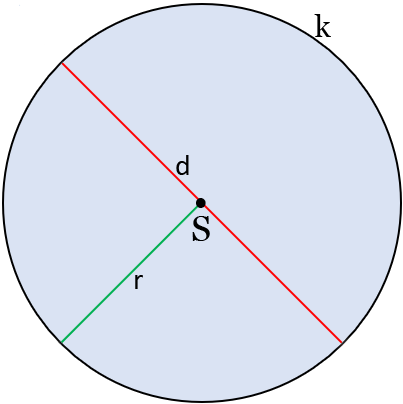

Obvod a obsah kruhu
Vlastnosti kruhu
- Kruh je dán středem.
- Jeho velikost se odvíjí od polomměru nebo průměru.
- Velikost průměru je rovna dvojnásobku poloměru.

Vzorečky
Obvod O = 2 * πr = πd
Obsah S = πr2 = πd2 / 4
Vysvětlivky
d = průměr
r = poloměr
S = střed kruhu
π = Pí / Ludolfovo číslo =̇ 3,14 (na těchto stránkách se π počítá na 15 míst)
?